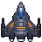

Interceptor
Rekommenderadkan inte bordas

Ett litet, mycket snabbt jaktskepp som anfaller i svep: det dyker in, skjuter en skur och drar sig undan innan det vänder igen. Svårt att träffa, men tål lite. Flygs av pirater och av faktionernas patruller.
Vad varje post gör
- Captain vänder skeppet så att Gunner får skottlinje när interceptorn kommer in.
- Gunner skjuter framför den, eftersom den rör sig fort. Raketer passar bra.
- Engineer lägger kraft på sköldarna under svepen och på vapnen däremellan.
Vad den tillför
En fiende som kräver att man leder skotten och samarbetar om vinkeln. Bilden finns redan i spelet men används inte.